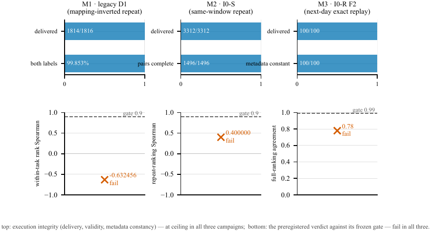
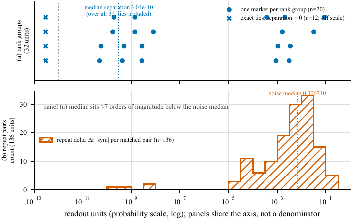
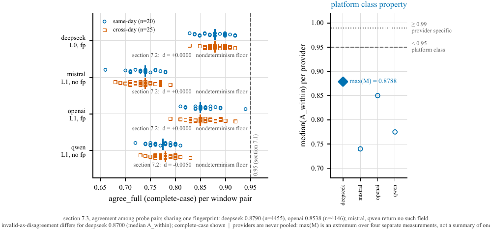

TL;DR — Deux campagnes préenregistrées (seuils gelés avant exécution) censées mesurer la progression d'une solution à partir de traces partielles n'ont jamais dépassé la validation de leur instrument : le dossier d'exécution est au plafond (livraison, schéma, hash des requêtes, métadonnées constantes) et les deux gates scientifiques échouent, Spearman de reclassement 0,400 contre 0,90 et rejeu octet-identique à J+1 à 0,78 contre 0,99.
Claim principal, formulé précisément : « sur un endpoint partagé, un nom de modèle n'est pas un instrument gelé ; une évaluation préenregistrée doit mesurer son instrument (noise floor, distribution des écarts, sémantique des métadonnées) avant de geler le moindre seuil » [§13]. Périmètre revendiqué par les auteurs : les fournisseurs testés, les champs de métadonnées qu'ils exposent, ce protocole de ranking, ces fenêtres d'observation. Les auteurs insistent : aucune nouveauté sur le phénomène (inconsistance des juges, non-déterminisme à T=0 et son mécanisme kernel sont acquis [§2, Tab. 1]) ; la contribution revendiquée est le réglage d'audit — seuil préenregistré doté de l'autorité de terminer un programme, chaîne d'audit octet-par-octet, décomposition du mécanisme, suppléments d'attribution prospectifs, et une discipline « instrument-first ».
⚠️ Point de cadrage central pour notre corpus : 0,400 et 0,78 ne mesurent pas la même chose (voir §5 et la mission de vérification en fin de mémo). 0,400 vient d'un readout logprob à deux labels sur un measurand dégénéré fabriqué par les auteurs eux-mêmes ; 0,78 vient d'un juge à ranking structuré rejoué à l'octet près. Seul 0,78 (et ses répliques 0,805 / 0,74–0,88) documente l'instabilité d'API.
20260729, 4 à 8 étapes visibles, grille de préfixes J=4 (25/50/75/100 % des étapes visibles) [§3.1, App. A.9].gpt-4o-mini-2024-07-18 (T=0.8, structured outputs stricts) écrit 4 traces pas-à-pas par tâche se terminant par une réponse rationnelle exacte → l'observateur voit tâche + préfixe tronqué d'un candidat → readout Bernoulli (p_{qnj}) [§3.1]. Le seul label de supervision de toute l'étude est la correction exacte de la réponse finale, décidée par comparaison rationnelle canonique, jamais par un modèle [§3.1].Ce n'est pas un env RL : c'est une chaîne de mesure. Je la décris comme un harness de vérifieur, puisque c'est ce qui nous intéresse.
A ou B ; les deux labels exacts sont lus à l'unique position du token-réponse ; (r = e^{\ell_+}/(e^{\ell_+}+e^{\ell_-})), aucun sampling.
2. D1-S (v2.3a) : paires adjacentes à double mapping, chaque point de mesure interrogé deux fois avec le mapping label→sens inversé entre les bras ; clip (\varepsilon = 10^{-4}) avant logit ; (z_{\mathrm{sym}} = (z^{(+)}+z^{(-)})/2), diagnostic de biais (b_{\mathrm{map}} = (z^{(+)}-z^{(-)})/2) [§3.2, App. B.1].
3. Juge I0-R : sortie JSON structurée, le champ ranking doit être une permutation exacte des dix alias présentés ; parsing tout-ou-rien ; un readout invalide est conservé comme échec, jamais rejoué jusqu'à validité [App. B.2].max_completion_tokens = 1 pour les readouts logprob, 256 pour le juge ; thinking désactivé [App. A.9].temperature 0.0, max_completion_tokens 256, response_format {"type":"json_object"}, seed 2026080302, thinking off [App. A.9]. Déterminisme : non promis par la plateforme et non obtenu — c'est l'objet du papier. Pas de batching API, zéro retry sur le plan I0-S [§4.1].mistral rejette seed (HTTP 422) → champ retiré pour ce fournisseur seulement, et ses headers de rate-limit imposent un intervalle d'envoi mesuré de 1,5 s ; deepseek désactive le thinking via extra_body [App. A.9].fail-closed : un garde qui ne sait pas parser doit refuser — règle adoptée après que deux gardes du projet ont « failli ouvert » (un paramètre de forme de wire, un contrôle d'ordonnancement) [§9.8, App. A.10].Le « vérifieur » est double ici, et la distinction est exactement notre sujet.
| Grandeur | Valeur | Seuil gelé | Verdict |
|---|---|---|---|
| Couverture 2-labels exacts, bras simple | 1,000 | ≥ 0,995 | pass |
| Complétude des paires | 1,000 | ≥ 0,990 | pass |
| Masse de label par bras, médiane / p01 | 0,999475 / 0,997172 | ≥ 0,95 / ≥ 0,80 | pass |
| Stabilité scalaire en répétition, médiane |Δr_sym| | 0,006710 | ≤ 0,03 | pass, marge ×4,5 |
| Stabilité de ranking en répétition, Spearman médian intra-tâche | 0,400 | ≥ 0,90 | fail (29/31 groupes sous le seuil) |
| Rejeu octet-identique J+1, accord permutation exacte | 78/100 = 0,78 | ≥ 0,99 | fail |
[Tab. 2 §4.1, App. A.3, A.4]
- Accord avec des humains : jamais mesuré, et explicitement hors périmètre — le papier mesure la reliability (l'instrument se répète-t-il ?), pas la validity (lit-il la bonne chose ?). Il le dit : « this paper does not conclude that LLM-as-judge evaluation is unusable ; it concludes that judge instruments have measurable noise floors, gap distributions, and audit boundaries » [§11.3].
- Si juge LLM : modèles nommés (cf. frontmatter). Le prompt et les rubriques ne sont recopiés nulle part, ni dans le corps ni en annexe ⚠️ — on a le contrat de wire (response_format, schéma du champ ranking, 10 alias) et la configuration gelée [App. A.9, B.2], pas le texte envoyé. Pour un papier qui ajoute 24 items de checklist de reporting, l'absence du prompt est une ironie qu'il faut noter.
- Robustesse / attaque du vérifieur : le reward hacking au sens RL n'est pas le sujet. L'équivalent traité, et traité sérieusement, est le hacking de l'évaluateur par l'évaluateur : substitution de métrique post-hoc, replay-until-agreement, votes majoritaires a posteriori, abaissement de seuil, replay-selection — tous interdits à l'avance et le papier démontre ce que la substitution aurait rapporté (§6, infra). Un échec reproductible verbatim est publié plutôt que patché : une sonde deepseek renvoie un tableau JSON nu au lieu de l'objet requis, dans les dix fenêtres, octet-identique à chaque fois, scorée invalide 10/10 sur les deux jours [§10.2].
Sans objet : aucun entraînement, aucun algorithme de RL, aucun hyperparamètre d'optimisation. Il n'y a ni GRPO, ni PPO, ni DPO, ni modèle entraîné dans ce papier. Les seuls « hyperparamètres » sont ceux de la mesure (T=0.0, seed 2026080302, top_logprobs 5, clip 1e-4, fraction de répétition 0,10, concurrence 1) [App. A.9].
La seule chose qui ressemble à de l'optimisation est l'échec d'une stratégie de réduction de variance, et elle nous concerne directement : moyenner plus ne répare pas (§7 du papier, repris en 7.0 et 7 ci-dessous). Simulation déterministe, 500 réplicats, graine 20260730, estimateur D2 avec lissage de Jeffreys (\hat r = (m+\tfrac12)/(M+1)), readouts D1-S gelés utilisés comme proxys déclarés de probabilité [§7.1] :
| M | Appels observateur | SE à p=0,5 | Médiane du gate | q95 | Taux de passage |
|---|---|---|---|---|---|
| 8 | 11 968 | 0,157 | 0,333 | 0,642 | 0/500 |
| 16 | 23 936 | 0,118 | 0,304 | 0,577 | 0/500 |
| 32 | 47 872 | 0,086 | 0,280 | 0,577 | 0/500 |
| 64 | 95 744 | 0,062 | 0,333 | 0,632 | 0/500 |
| 100 | 149 600 | 0,050 | 0,400 | 0,632 | 0/500 |
| 200 | 299 200 | 0,035 | 0,447 | 0,685 | 0/500 |
| 500 | 748 000 | 0,022 | 0,566 | 0,800 | 0/500 |
Lecture : la SE s'améliore d'un facteur 7, la médiane atteinte monte de 0,33 à 0,57, le taux de passage ne quitte jamais zéro, et même le q95 (0,80) reste sous 0,90 à trois quarts de million d'appels. Raison [§7.2] : moyenner réduit le dénominateur d'un problème de résolution (le bruit), pas le numérateur (l'écart mesuré, médiane 3×10⁻¹⁰, avec des égalités exactes dans un tiers des groupes). « No sample size resolves a separation of zero. » 0/500 borne la probabilité de passage par point de grille sous 0,006 à 95 % de confiance, sous le modèle proxy. Les auteurs bornent honnêtement : diagnostic exploratoire de measurement-error, pas expérience exécutée, et sans prédiction sur des measurands redessinés [§7.3].
Contrepoint constructif, chiffré, du même papier [§9.4] : si le livrable consomme réellement un ranking complet, on garde la granularité mais on fait de l'agrégat l'objet mesuré. Simulation de readouts Borda-of-(k) sous le spectre de Kendall same-day de A-S1 (calibrée pour que (k=1) reproduise l'accord par paires mesuré de 0,7985) : deux batteries agrégées indépendantes s'accordent exactement à 0,94 pour (k=3), 0,98 pour (k=5), 0,999 pour (k=9), accord à une transposition près à 0,999 dès (k=5). Un gate inatteignable par appel devient franchissable à 5–9 appels par point de mesure. ⚠️ C'est une simulation sous surrogate de transposition adjacente, calibrée à (k=1), sur un endpoint et une batterie ; les auteurs la classent au même rang probatoire que §7 : « it sizes a design and authorises nothing » [§11.4].
Trois modes, chacun : comportement → détection → correction. Chaque diagnostic a façonné la génération d'instrument suivante, et chaque génération a ensuite échoué sur un autre critère préenregistré [§3.2].
M1 — biais de sémantique des labels (legacy D1) [§5.1]
- Comportement : le protocole à mapping unique passe son critère de répétabilité scalaire (|Δ| médian 0,0233 ≤ 0,03) et échoue son critère de ranking avec une médiane négative : −0,632. Inverser quel label signifie « correct » tend à inverser le classement.
- Détection : l'explication banale est exclue — les 1 494 réponses réussies émettent exactement A ou B à une position de token, les deux labels dans les top-logprobs (taux 1,0), labels équilibrés (A : 734, B : 760), chaîne de modèle constante. L'instrument a livré exactement le readout demandé ; c'est le readout qui était biaisé. Diagnostic quantitatif : sur les 136 paires inversées legacy, (b_{\mathrm{map}}) médiane 0,250 logit, quartiles −0,187 à 0,875, p95 de (|b_{\mathrm{map}}|) à 1,391 logit ; et surtout le biais interagit avec la grandeur mesurée : médiane +0,531 sur les candidats corrects, −0,250 sur les incorrects. Les classements issus des bras forward s'accordent avec ceux des bras reverse à Spearman médian 0,211 seulement.
- Correction : symétrisation (D1-S) qui annule la composante antisymétrique au premier ordre par construction. Honnêteté notable : le biais persiste intact dans la fenêtre fraîche (1 496 paires I0-S : médiane 0,3125, p95 1,3125 logit) — « what symmetrisation changed is that the bias no longer enters the readout, not that the observer stopped having it ». Pas de garantie sur les interactions d'ordre supérieur entre tokens de label et contenu du prompt.
M2 — instabilité de reclassement sur un measurand quasi dégénéré (I0-S) [§5.2] — le mécanisme central - Comportement : paradoxe apparent — répétabilité scalaire 0,00671 (4,5× meilleure que sa borne) et Spearman de reclassement 0,400 contre un gate à 0,90, 29/31 groupes sous le seuil. - Détection : deux distributions mesurées côte à côte. Ce que l'instrument bouge (noise floor) : deltas de répétition, quartiles 0,001–0,018, p90/p95 à 0,052/0,080, max 0,167 → ~10⁻³–10⁻² en probabilité. Ce qu'il y a à mesurer : étendue médiane des 4 candidats intra-tâche 0,0114 ; écart minimal médian entre candidats adjacents 3,04×10⁻¹⁰, p75 encore à 0,0005 ; 12/32 groupes contiennent des égalités exactes au readout original, 7/32 à la répétition ; seuls 62/128 candidats conservent leur ordre intra-paire entre répétitions. L'écart typique est 4 à 7 ordres de grandeur sous le noise floor → des candidats séparés par 10⁻¹⁰ se réordonnent avec probabilité ≈ ½. « Scalar stable, ranking collapsed » n'est pas une contradiction, c'est de l'arithmétique. - Signature propre : médianes de Spearman stratifiées par niveau de préfixe visible — 0,000 (25 %), 0,769 (50 %), 0,500 (75 %), 0,000 (100 %). À un quart de la trace les candidats n'ont pas encore divergé ; à 100 % la réponse finale est visible, les readouts saturent, et des candidats de même correction redeviennent indiscernables. L'information de classement vit en milieu de trace. (Très utile pour nous : un juge de process a une fenêtre utile, pas une monotonie.) - Correction / cause amont : la dégénérescence a été fabriquée par le design de tâches (exactitude 0,781, mixité 16,25 %), et le gate à 0,90 a été gelé avant toute mesure de ces intervalles. Règle qui en sort : conditionner le dénominateur d'un gate de ranking aux paires que l'instrument peut en principe résoudre, exclusions par règle préenregistrée avant de voir la donnée.
M3 — entrées octet-identiques, sorties qui dérivent (I0-R) [§5.3] - Comportement : 100 requêtes gelées rejouées après un gate obligatoire de ≥ 24 h, corps octet-identiques (SHA-256 vérifié 100/100) → la permutation exacte est reproduite 78 fois sur 100. Les 22 dérives se répartissent sur 16 tâches sur 25 (ce n'est pas une requête malade) pendant que tous les champs de métadonnées visibles sont constants. - Détection : la dérive est locale — spectre de distance de Kendall : 78 exacts, 11 à distance 1, 11 répartis sur 2–11 ; top-1 95/100 ; accord par paires 4 436/4 500 ≈ 0,986. Majoritairement des transpositions adjacentes simples : exactement ce que produisent des sous-ensembles quasi dégénérés (M2) + de petites perturbations numériques dans un readout de permutation complète. - Correction (et auto-réfutation) : le mode s'appelait « overnight drift », impliquant une attribution à un changement de backend. Le supplément A-S1 falsifie cette lecture : same-day 0,805 vs cross-day 0,800, et le 0,78 historique tombe à l'intérieur de la distribution same-day (étendue 0,73–0,83). Énoncé corrigé : « exact input identity does not purchase exact output identity even within an afternoon ; the 24 hours added nothing ».
Structure partagée [§5.4] : M1 = instrument biaisé, M2 = measurand dégénéré, M3 = plateforme instable — trois défauts distincts qui produisent le même observable dans un readout de ranking, parce qu'une permutation est un amplificateur : une perturbation scalaire infinitésimale devient un événement de rang discret et visible par le gate dès qu'elle traverse l'un des nombreux écarts quasi nuls.
Trois « root causes » nommées : measurand (écarts quasi nuls, et readout non ordonné par magnitude d'erreur), plateforme (pas de déterminisme bitwise promis à T=0, pas d'identité de snapshot auditable), processus (les deux gates ont été gelés sur des grandeurs jamais pilotées, donc aucun instrument de la classe auditée ne pouvait les atteindre — « they tested nothing, at full ceremony and real cost »).
Comportements émergents inattendus : (i) le biais (b_{\mathrm{map}}) interagit avec la correction du candidat plutôt que d'être un offset constant ; (ii) la non-monotonie en niveau de préfixe (0 / 0,769 / 0,5 / 0) ; (iii) A-S3 renverse la lecture naïve : la séparation suit le type d'erreur, pas sa taille, et la cellule de plus grande erreur d'un type (off-by-one à ε ≥ 1, n = 36) tombe à 0,333, sous le hasard ; (iv) en A-S1 r2, un jour sort du lot (day 2, médiane 0,7800 contre 0,8250 ailleurs) et rien d'observable ne le distinguait à l'avance — son canary de pré-vol a passé ses quatre assertions. Conséquence directe : « measure on a good day » n'est même pas bien posé prospectivement.
mistral : intervalle d'envoi de 1,5 s imposé par ses headers de rate-limit. Une sonde de débit dédiée dans les 270 appels de calibration [§8.4].retry-after. Donc « la charge, et donc la forme des batchs — la variable même sur laquelle tourne le mécanisme de non-déterminisme — est invisible sur la moitié des plateformes » [§8.4(3)].| Chiffre annoncé | Où il est annoncé | Source dans le papier | Verdict |
|---|---|---|---|
| 52 988 tentatives de requête auditées | abstract, intro | §12.2 : 4 088 (D1) + 3 314 (I0-S) = 7 402 phase-1 + 45 586 (I0-R) = 52 988 ; décomposition 52 574 réponses + 413 échecs transport + 1 sans événement | confirmé (arithmétique refaite, ferme exactement) |
| Spearman 0,400 contre 0,90 requis | abstract, intro | Tab. 2 §4.1 ; App. A.3 sous-critère 5 ; 29/31 groupes sous seuil | confirmé |
| Rejeu J+1 octet-identique 0,78 contre 0,99 | abstract, intro | Tab. 2 §4.1 ; §5.3 ; App. A.4 (78/100) | confirmé |
| « dossier d'exécution au plafond » | abstract, intro | Tab. 2 : 3 312/3 312 et 100/100 livrés, 0 retry, hash 100/100, model et system_fingerprint et finish reason identiques 100/100 ; 209/209 tests offline, 11/11 artefacts de manifest F2 |
confirmé |
| « 31 groupes valides, 100 paires de rejeu, dix fenêtres par bras supplémentaire, 3 060 jugements » | abstract | §5.2 (31/32), §5.3 (100), §10.1 (10 fenêtres r1) et §10.2 (10 fenêtres/fournisseur), §10.3 (85×9×4 = 3 060) | confirmé — et la précision « audit volume, not sample size » est tenue partout |
| « un mapping label→sens qui biaise le readout aussi fortement que le signal » | abstract | §5.1 : p95 de |b_map| = 1,391 logit, décrit comme rivalisant avec « the dynamic range of the signal » | introuvable au sens strict : l'étendue dynamique du signal n'est jamais mesurée ni chiffrée. L'interaction (+0,531 corrects / −0,250 incorrects) et le Spearman forward-vs-reverse de 0,211 soutiennent « biais du même ordre », pas l'égalité |
| « écarts candidats sept ordres de grandeur sous le noise floor » | abstract | §5.2 : écart minimal médian 3,04×10⁻¹⁰ vs bruit médian 0,006710 → ratio ≈ 2,2×10⁷ | sur-généralisé : vrai pour l'écart minimal adjacent médian ; le corps dit lui-même « quatre à sept ordres », et l'étendue intra-tâche médiane (0,0114) est du même ordre que le noise floor. Lire « les écarts » sans qualificatif gonfle le constat |
| « un design simulé à 748 000 appels a passé 0 fois sur 500 » | abstract | §7.2, ligne M=500 : 748 000 appels, médiane 0,566, q95 0,800, 0/500 | confirmé (et borne 95 % < 0,006 par point de grille, sous le modèle proxy) |
| « attendre n'a pas aidé : 0,805 contre 0,800, répliqué sur cinq jours de plus, le plancher propre d'un jour plus bas encore » | abstract | §10.1 : r1 d = 0,805 − 0,800 = 0,005, bande gelée |d|<0,03 ; r2 0,8150 vs 0,8100, d = 0,0050 ; médianes par jour 0,8250/0,7800/0,8000/0,8200/0,8250, étendue 0,0450 → « a day stood out » (day 2) | confirmé |
| « quatre fournisseurs dans trois juridictions partagent le plancher, médianes 0,74 à 0,88 » | abstract | §10.2 : 0,740 (mistral) / 0,775 (qwen) / 0,850 (openai) / 0,879 (deepseek) ; test de classe de plateforme max = 0,8788 < 0,95 → tiré | confirmé pour les médianes et le verdict. « Trois juridictions » : affirmé en §11.1, jamais documenté par fournisseur → cet élément-là est introuvable |
| « prédit par aucun des champs de métadonnées qu'ils exposent » | abstract | §8.1 : seul system_fingerprint est testé en prédictivité (openai 0,854 même-fp vs 0,884 fp-différent ; deepseek fp constant → 0,879) ; §4.1 ajoute model, finish reason, HTTP status comme constants |
sur-généralisé : la prédictivité n'est mesurée que sur un champ ; les autres sont montrés constants (donc non informatifs), ce qui n'est pas la même preuve. Le corps se borne explicitement (« "metadata" in this paper always means that set ») — l'abstract, non |
| « l'auto-hébergement en kernels batch-invariants n'a aidé que serveur au calme ; la charge concurrente a multiplié le désaccord par 8,4 » | abstract | §8.3 : calme 0,9872 (clean) / 0,928 (critère gelé) ; chargé 0,8925 / 0,830 ; désaccord par paire 1,28 % → 10,75 % = ×8,4 | confirmé — et noter que même au calme ce n'est pas 1,0 : la batch-invariance est « nécessaire mais pas suffisante » sur cette stack, correction explicite d'une version antérieure du papier qui l'annonçait « by construction » |
| « la séparation suit le type d'erreur, pas la taille » | abstract | §10.3 : table par bin (0,7604 → 0,9860 → 0,9020) mais contraste intra-type décisif par préenregistrement : dans 4 types sur 5 la séparation ne monte pas avec ε, et off-by-one à ε ≥ 1 (n = 36) = 0,333 | confirmé, avec la bonne lecture (la montée poolée est surtout de la composition) ; verdict gelé réalisé = « la batterie n'a pas encadré la limite de détection », qui se situe seulement sous 10⁻³ |
| « un pilote à ~2 % du volume d'appels aurait exposé les deux gates inatteignables à l'avance » | abstract, intro, §9.2 | ~1 000 appels / 52 988 ≈ 1,9 % ✔ ; CNY 3 contre 52 988 tentatives ✔ ; App. D (items 5–11 ≈ 2 % du volume) | partiellement confirmé : l'arithmétique des 2 % tient ; « aurait exposé les deux » est contrefactuel — démontré pour I-5R (un pilote l'a effectivement exposé après coup), inféré pour I-3S depuis la distribution d'écarts |
Bilan 7.0 : aucun chiffre contredit, aucun chiffre fantôme. Tous les nombres tabulés se retrouvent et se recoupent (le spectre 0,780/0,950/0,986 est même reproduit indépendamment à 0,805/0,950/0,986 sans pooling). Les réserves portent sur trois formulations d'abstract plus larges que la mesure (« aussi fortement que le signal », « sept ordres », « aucun champ de métadonnées ») et sur une affirmation d'affiliation géographique non sourcée. Le corps, lui, se borne de façon presque obsessionnelle.
| Grandeur | Valeur | Contexte |
|---|---|---|
| I-3S ranking Spearman | 0,400 (gate 0,90) | 31 groupes valides / 32, 29 sous seuil [§4.1] |
| I-3S stabilité scalaire | 0,006710 (gate 0,03) | même instrument, même fenêtre [§4.1] |
| Legacy D1 ranking Spearman | −0,632456 (gate 0,90) | livraison 1 814/1 816, couverture 99,853 % [App. A.1] |
| I-5R rejeu exact | 0,78 (gate 0,99) | 100 corps octet-identiques, SHA-256 100/100 [App. A.4] |
| Même dérive, top-1 | 0,95 | mêmes 100 rejeux [§6.1] |
| Même dérive, accord par paires | 4 436/4 500 = 0,985778 | mêmes 100 rejeux [§6.1] |
| A-S1 r1 same-day / cross-day | 0,805 / 0,800, d = 0,005 | 1 000/1 000 readouts valides, fp null 1 000/1 000 [§10.1] |
| A-S1 r1 bootstrap cluster (10 000 réplicats, fenêtre = unité) | same-day [0,77 ; 0,83], cross-day [0,76 ; 0,82], d ∈ [−0,03 ; 0,04], 87 % des réplicats dans la bande | dépendance prise en compte [§10.1] |
| A-S1 r1 référence exacte | sur les 252 réétiquetages équilibrés, |d| ≥ observé dans 98 % des splits, aucun > 0,025 | « propriété de la collection de fenêtres, pas des étiquettes de jour » [§10.1] |
| A-S1 r2 (5 jours, 2 500/2 500) | 0,8150 / 0,8100, d = 0,0050, d ∈ [−0,01 ; 0,03] (99,8 %) ; étendue par jour 0,0450 → day 2 se détache | règle de réplication tirée [§10.1] |
| A-S2 (4 000/4 000) médianes same-day | deepseek 0,879 · openai 0,850 · qwen 0,775 · mistral 0,740 ; d = 0,000/0,000/0,000/−0,005 | max 0,8788 < 0,95 → verdict « platform-class » [§10.2] |
| Bras L2 auto-hébergé | calme 0,9872 (0,928 critère gelé) ; chargé 0,8925 (0,830) ; désaccord ×8,4 | une stack, un modèle, deux régimes de charge [§8.3] |
| A-S3 séparation par bin ε | 0,7604 / 0,7914 / 0,8069 / 0,9860 / 0,9020 (Wilson 95 % tous > 0,5) | 3 060 jugements, 340/340 readouts valides [§10.3] |
| A-S3 désaccord de rejeu inter-passes | 19/765 paires = 0,0248, à quelques minutes d'intervalle | déclaré non comparable aux chiffres same-day [§10.3] |
system_fingerprint churning (openai) |
19 valeurs distinctes sur une journée ; 8 dans une seule fenêtre de 37 appels | même-fp 0,854 vs fp-différent 0,884 → ne prédit rien [§8.1] |
model et base URL, 5 fenêtres × 2 jours × 4 fournisseurs. Jamais poolé, analyse par fournisseur, bootstrap par fenêtre et réétiquetage exact appliqués par fournisseur (d dans ±0,03 partout, fractions in-band 0,91–0,95, toutes probabilités de réétiquetage 252-splits à 1,0). Aucun fournisseur n'approche l'exactitude de rejeu ; le comportement cross-day égale le comportement same-day chez tous ; la stabilité diffère (0,74–0,88) mais pas le caractère.Le papier est, structurellement, une échelle d'ablations de la mesure : 1. Métrique (§6) : même lot de dérive, trois agrégations → 0,780 / 0,950 / 0,986. L'agrégation au niveau enregistrement est celle qui décroît le plus vite. Conséquence que je retiens : le choix d'agrégation, pas la plateforme, décide si vous voyez un désastre ou un détail. 2. Échelle d'échantillonnage (§7) : 7 points de grille jusqu'à M=500 → 0/500 partout. Isole que ce n'est pas un problème de bruit. 3. Temps (A-S1) : same-day vs cross-day → d = 0,005. Isole que ce n'est pas une dérive de version. 4. Fournisseur (A-S2) : 4 plateformes → plancher partagé. Isole que ce n'est pas un endpoint pathologique. 5. Measurand (A-S3) : écarts construits connus → isole la résolution de l'instrument hors de sa propre boucle. 6. Charge (§8.3) : calme vs 8 flux concurrents → ×8,4. Isole la charge comme cause suffisante. 7. Métadonnées (§8.1) : fingerprint absent / churning / stable-mais-insuffisant → isole que l'audit par métadonnées ne peut pas certifier.
Pas de scaling de taille de modèle. Scaling d'échantillonnage : négatif (§7). Scaling de jours : 2 → 7 jours, le plancher ne bouge pas mais le plancher par jour vagabonde au-delà de la bande. Scaling d'agrégation : la simulation Borda-of-(k) prédit 0,94/0,98/0,999 à (k) = 3/5/9 — la seule courbe de scaling encourageante du papier, et c'est une simulation.
model + base URL ; bras L2 comme point de contrôle supérieur ; calme vs chargé sur la même stack. Pour un papier de mesure, c'est l'appariement pertinent.gpt-4.1 jugeant des sorties gpt-4o-mini), confond de self-preference déclaré.deepseek L0 alors que §8.3 en parle comme d'un « cas L1-like », et les notes de bas de figure renvoient à « section 7.1/7.2/7.3 » alors que la numérotation du corps est §8/§10 (figures construites contre une numérotation antérieure).evidence = 5/6 — cases vraies : baselines (bras appariés au niveau wire), ablation (sept axes), variance (bootstrap cluster + réétiquetage exact + réplication r2), coherence (verdict 7.0 : zéro contradiction, surgénéralisations confinées à l'abstract), eval (contamination sans objet ; la grandeur revendiquée est mesurée avec son incertitude). Case fausse : repro (aucun lien, couche restreinte sur demande, trou de provenance sur 19 runs).
Solide sur son claim étroit, et inhabituellement hygiénique : « sur un endpoint partagé, un readout de permutation exacte d'un juge LLM n'est pas reproductible à l'octet, le plancher est instantané et non cross-day, il existe chez les quatre fournisseurs testés, et aucun champ de métadonnées exposé ne le certifie ». À répliquer sur le claim large que le titre invite à lire (« les juges d'API sont inutilisables comme instruments ») : ce claim-là n'est pas soutenu par le papier, et le papier le dit [§11.3].

Ce qu'il faut voir : la ligne du haut (livraison 1 814/1 816, 3 312/3 312, 100/100 ; labels 99,853 % ; paires 1 496/1 496 ; métadonnées constantes 100/100) est à 1,0 partout. La ligne du bas place chaque verdict préenregistré contre son seuil gelé : −0,632 et 0,400 contre 0,90, 0,78 contre 0,99. Le contraste entre les deux lignes est la thèse (C1) : tout ce qu'un audit d'ingénierie sait vérifier peut être parfait pendant que l'instrument est inutilisable. C'est la figure à montrer à quiconque cite un taux de livraison comme preuve de reproductibilité.
Ce qu'il faut voir : deux panneaux sur le même axe log en unités de probabilité, mais pas le même dénominateur (le papier le signale explicitement). En haut, les écarts minimaux des 32 groupes de rang : médiane 3,04×10⁻¹⁰, et 12 groupes à écart exactement nul (croix, hors échelle sur un axe log). En bas, l'histogramme des 136 deltas de répétition : médiane 0,006710. Les deux médianes sont séparées de ~7 ordres de grandeur. On voit d'un coup d'œil pourquoi 0,400 n'est pas un échec de la plateforme mais un échec de conception du measurand : on demandait à l'instrument de résoudre des écarts sept ordres sous son propre bruit.
Ce qu'il faut voir : à gauche, par fournisseur, les accords de paires de fenêtres same-day (ronds) et cross-day (carrés) : les deux nuages se superposent chez les quatre (d = 0,0000 / 0,0000 / 0,0000 / −0,0050), et aucun n'atteint la ligne 0,95. À droite, les quatre médianes (0,740 à 0,879) contre les lignes 0,95 (classe de plateforme) et 0,99 (ce qu'exigerait un gate de rejeu) : max(M) = 0,8788. La note de bas de figure porte le détail fingerprint (deepseek 0,8790 sur n = 4 455 ; openai 0,8538 sur n = 4 146 ; mistral et qwen n'exposent pas le champ) et rappelle que les fournisseurs ne sont jamais poolés : max(M) est un extremum sur quatre mesures séparées, pas un résumé. ⚠️ Deux scories de construction :deepseek y est étiqueté L0 alors que §8.3 le traite en « L1-like », et les renvois internes citent une numérotation de sections antérieure (7.1–7.3).
| Ingrédient | Choix du papier | Équivalent juridique | Transfert | Ce qui manque |
|---|---|---|---|---|
| Source des tâches | arithmétique rationnelle synthétique, vérité exacte, dégénérescence fabriquée (84 % des groupes sans rien à classer) | questions de recherche juridique type Harvey LAB / Vals, pas de réponse canonique | non | tout : le papier choisit exprès un domaine à vérité exacte pour isoler l'instrument. L'analogie utile n'est pas la tâche, c'est le protocole |
| Vérifieur | double : exact match rationnel (référence) + juge LLM d'API (instrument sous audit) | rubrique multi-critères + juge LLM, sans référence exacte | adaptable | le juridique n'a pas de « colonne de gauche » déterministe pour calibrer le juge. Il faut la fabriquer : erreurs injectées par construction (A-S3 transposé), c.-à-d. des mémos corrects dégradés de façon contrôlée (citation inexistante, juridiction fausse, délai erroné, holding inversé, omission d'un élément) |
| Harness / outils | single-turn, un appel = une mesure, T=0, seed fixe, response_format JSON, parsing tout-ou-rien, readout invalide conservé comme échec |
juge de rubrique appelé par l'orchestrateur de rollouts | direct | rien — la chaîne d'audit (hash canonique et wire, réponse brute, model côté réponse par appel, fingerprint y compris null, retries, cap reserve-before-network, resume en préfixe strict) est copiable telle quelle dans notre infra de rollouts |
| Algo | aucun (pas de RL) | GRPO / RLOO sur reward de rubrique | non | le papier ne dit rien sur la propagation de ce bruit dans l'advantage. C'est notre question ouverte, pas la sienne |
| Curriculum | aucun | — | non | — |
| Anti-hacking | liste d'interdits gelée a priori : pas de substitution de métrique, pas de replay-until-agreement, pas de vote majoritaire post-hoc, pas de suppression des tirages discordants, pas de déplacement de seuil ; démonstration chiffrée de ce que la substitution aurait rapporté (0,78 → 0,95 → 0,986 sur les mêmes données) | discipline d'équipe sur nos propres gates d'éval et nos propres rapports de progrès | direct | c'est, à mon sens, le meilleur apport du papier pour nous, et il ne coûte que de la discipline d'écriture |
| Unité de mesure | §9.5 : sur infra L0/L1, un appel est un tirage de la distribution de non-déterminisme ; fixer (k), l'agrégateur et le gate avant exécution, garder tous les tirages | reward de rubrique = médiane/Borda de (k) appels juge, règle de bris d'égalité déterministe, fixée avant | direct | le chiffrage ((k) = 5 → 0,98) est une simulation sur un autre endpoint et une autre batterie ; il faut refaire le pilote chez nous |
| Niveau d'identité de snapshot | échelle L0 / L1 / L2, déclarée comme métadonnée obligatoire à côté de température et seed ; L1 insuffisant pour une prétention de rejeu exact, par la doc du fournisseur et par la mesure | reporting de tout run d'éval ou de RL de Gemini Law : nom seul / snapshot épinglé / poids auto-hébergés + kernels batch-invariants + classe matérielle | direct | chez GDM, pour un juge interne servi sur TPU, le niveau effectif est à établir : ni L0 ni L2 au sens du papier. Question à poser (infra) |
| Pilote → simulation → gel | piloter noise floor et distribution d'écarts, simuler la caractéristique opérationnelle du gate sous instrument sain (≥ 0,9) et dégradé (≤ 0,1), ne geler que si la discrimination est suffisante ; prix ≈ 2 % du volume | avant de figer le moindre seuil d'acceptation sur Harvey LAB / Vals ou sur un reward de rubrique | direct | notre équivalent de la « distribution d'écarts » = distribution des écarts de score de rubrique entre rollouts d'un même groupe. Personne ne la mesure, et c'est elle qui décide si GRPO a du signal |
| Conditionnement aux paires informatives | dénominateur d'un gate de ranking restreint aux paires dont l'écart piloté dépasse une borne de résolution δ issue du noise floor (0,0067 médian, 0,080 p95), égalités exclues par règle préenregistrée | groupes GRPO où tous les rollouts reçoivent la même note de rubrique → advantage nul, bruit pur | adaptable | le papier exclut ces paires de la mesure ; en RL on veut plutôt les rééchantillonner hors du batch. Même diagnostic, action différente |
Meilleur ingrédient à transposer. Deux, indissociables : (1) « l'unité de mesure est l'agrégat, pas l'appel », fixée avant exécution — un reward de rubrique doit être défini comme médiane (ou Borda) de (k) appels juge avec agrégateur et règle de bris d'égalité gelés, tous les tirages conservés, et la liste d'interdits (pas de re-tirage jusqu'à accord, pas de vote a posteriori, pas de suppression des discordants) écrite dans le code, pas dans une note ; (2) la discipline pilote → simulation → gel : mesurer le noise floor du juge et la distribution des écarts de score avant de figer le moindre seuil, à ~2 % du budget. Le papier démontre le coût de ne pas l'avoir fait : 52 988 appels pour apprendre ce qu'un pilote à CNY 3 disait.
Expérience minimale. Sur notre juge de rubrique juridique actuel, batterie gelée de 100 items (questions Harvey-like × réponses candidates), 5 fenêtres par jour espacées ≥ 2 h, sur 2 jours, corps de requête octet-identiques, chaîne d'audit complète (hash canonique + wire, model côté réponse, fingerprint, retries). Trois lectures, bandes gelées avant : (a) noise floor = distribution des |Δ| du score continu de rubrique entre fenêtres ; (b) plancher d'accord au niveau décision (le verdict pass/fail de la rubrique, qui est notre « permutation » : discret, donc amplificateur) ; (c) distribution d'écarts = écarts de score intra-groupe entre rollouts d'une même question. Puis Borda/médiane-of-(k) pour (k) ∈ {1, 3, 5, 9} sur la même batterie.
Résultat attendu, par extrapolation du papier : score continu très stable (|Δ| médian de l'ordre de 10⁻²), décision discrète nettement moins (accord 0,85–0,97 selon la proportion d'items proches du seuil), et surtout — le vrai risque — une distribution d'écarts intra-groupe dont une fraction importante tombe sous le noise floor, c'est-à-dire des groupes GRPO dont l'advantage est du bruit de serveur. Si (c) montre > 30 % de paires sous δ, le problème n'est pas le juge : c'est la génération de tâches, exactement comme en §5.2.
Question à poser en interne chez GDM. Deux. (1) Infra : pour un juge servi en interne (TPU, batching dynamique), quel niveau de l'échelle L0–L2 pouvons-nous réellement revendiquer, et pouvons-nous obtenir un chemin de service batch-invariant (ou à batch fixe) pour les appels de reward, sachant que le papier mesure que la batch-invariance au calme donne 0,9872 et pas 1,0, et retombe à 0,8925 sous charge ? (2) Protocole : nos gates d'acceptation sur Harvey LAB et Vals ont-ils une caractéristique opérationnelle mesurée, ou ont-ils été fixés avant toute mesure du noise floor du juge — et dans ce cas, quelle fraction de nos écarts rapportés est sous ce plancher ?
(a) Le préenregistrement est-il public et horodaté ? Non, pas publiquement. Les préenregistrements sont ancrés par des hash de commit git (ffbeb95 pour A-S1 r1, 29b5962 pour r2, cdc012f pour A-S2, c145f0c pour A-S3) et par des SHA-256 de paquets (p. ex. a-s1-r1.zip, 39 membres), avec manifests de run cités par préfixe de hash [App. A.5–A.7, §12]. Mais : zéro URL dans tout le papier (vérifié par grep sur full.tex : aucune occurrence de http), aucun dépôt nommé, aucun registre externe (ni OSF, ni AsPredicted, ni DOI). Un hash de commit dans un dépôt non publié n'est pas un horodatage public : il certifie la cohérence interne et l'ordre des opérations si l'on fait confiance au dépôt, pas l'antériorité contre une horloge tierce. S'y ajoutent deux déviations déclarées par les auteurs eux-mêmes [§11.5] : le gel de l'étape de calibration de I0-R postdate deux résultats de développement — « this paper never describes I0-R as fully pre-frozen » (le protocole de rejeu F2 et son gate 0,99, eux, sont gelés avant l'ouverture de la fenêtre) ; et en A-S1 l'équivalence octet entre la batterie de sondes et les corps wire F2 historiques est affirmée par construction, non vérifiée contre les octets archivés (l'archive legacy enregistre la forme des paramètres SDK, pas les octets wire). Verdict : préenregistrement sérieux, auto-certifié, non vérifiable publiquement en l'état.
(b) Qu'est-ce qui varie exactement ? Ce qui est exclu par la mesure : la température (0.0 gelée ; le fournisseur qui refuse T=0 et n'accepte que 0.6 est signalé [§8.4(2)] mais non nommé, et il n'apparaît pas dans la liste des dérogations d'App. A.9 — petite lacune ⚠️), le seed (2026080302 fixe, retiré pour mistral qui le rejette en 422), les octets de requête (SHA-256 vérifié 100/100 sur F2), le nom de modèle (constant 100/100 ; côté réponse gpt-4.1 renvoie bien le snapshot daté gpt-4.1-2025-04-14), le finish reason, le statut HTTP, et le system_fingerprint (constant — null dans 100/100, 1 000/1 000 et 340/340 sur l'endpoint primaire). Un changement de version de modèle non annoncé est largement exclu par A-S1 : si c'était la cause, le cross-day serait pire que le same-day ; il ne l'est pas (d = 0,005 puis 0,0050). Ce qui varie et n'est pas observable : la forme des batchs / la charge du serveur, la non-invariance au batch des kernels, et une éventuelle rotation de déploiement derrière le nom. Le papier est explicite : il ne peut pas départager batching / scheduling kernel / rotation de déploiement depuis l'extérieur [§13], et l'observabilité de la charge est bimodale (deux fournisseurs sur quatre ne renvoient aucun header de rate-limit [§8.4(3)]) — la variable causale est invisible là où il faudrait la lire. Il ne démontre qu'une suffisance : sur sa stack L2, 8 flux concurrents multiplient le désaccord par 8,4 et ramènent l'accord dans la plage des endpoints partagés.
(c) L'effet tient-il à travers les fournisseurs ? Oui, sur quatre fournisseurs de familles distinctes, avec un protocole propre : requêtes octet-équivalentes ne différant que par model et base URL, 5 fenêtres × 2 jours × 4 fournisseurs = 4 000 appels, 4 000/4 000 valides, jamais poolés, analyse et bootstrap par fournisseur. Médianes same-day 0,740 / 0,775 / 0,850 / 0,879 ; max 0,8788 < 0,95 → verdict « propriété de classe de plateforme » tiré, avec une portée que les auteurs énoncent eux-mêmes comme « ces quatre fournisseurs, cette batterie de 100 sondes à ranking structuré, ces fenêtres — preuve précieuse sur l'infra de service partagée, pas un recensement ». Donc : pas un fournisseur pathologique. Mais aussi : une seule batterie, un seul protocole de readout, un seul format (permutation de 10 alias) — la généralisation porte sur les plateformes, pas sur les formats de juge.
(d) Quelle part relève du non-déterminisme numérique plutôt que d'un changement de modèle ? L'essentiel, et c'est mesuré de front. A-S1 r1 : same-day 0,805 vs cross-day 0,800, d = 0,005 dans la bande gelée |d| < 0,03 ; bootstrap cluster par fenêtre d ∈ [−0,03 ; 0,04] ; sur les 252 réétiquetages équilibrés, aucun ne produit |d| > 0,025 — « la décomposition est une propriété de la collection de fenêtres, pas des étiquettes de jour ». r2 sur 5 jours : d = 0,0050, intervalle [−0,01 ; 0,03]. Et le 0,78 historique tombe à l'intérieur de la distribution same-day (0,73–0,83). Autrement dit : les 24 heures n'apportent rien de mesurable ; la dérive est instantanée. Le bras L2 referme par le haut : kernels batch-invariants au calme → 0,9872 (pas 1,0 : « nécessaire mais pas suffisante », correction explicite d'une version antérieure du papier) ; sous charge → 0,8925, de retour dans la plage des endpoints partagés. Conclusion : la magnitude observée s'explique sans invoquer le moindre changement de modèle ; le non-déterminisme de service suffit. Nuance utile pour la production : les fenêtres A-S1 sont espacées de ≥ 2 h, tandis que les quatre passes A-S3, à quelques minutes d'intervalle sur une autre batterie, ne désaccordent que 19/765 paires (0,0248). Les auteurs déclarent les deux non comparables (batteries différentes) — correct, mais cela laisse ouverte une hypothèse opérationnellement précieuse : le plancher pourrait dépendre de l'écart temporel, et un batch de rollouts serré pourrait dériver nettement moins.
Ce qu'il faudrait faire concrètement pour qu'un reward adossé à un juge d'API reste mesurable. Dans l'ordre, et tout est chiffré ou prescrit par le papier :
1. Ne jamais faire du reward un match exact sur une structure discrète. C'est l'erreur amplificatrice : les mêmes 100 rejeux donnent 0,78 en permutation exacte, 0,95 en top-1, 0,986 par paires [§6.1]. Gater et récompenser sur un agrégat continu avec bande d'équivalence préenregistrée, ou décomposer le ranking en scores par candidat / par paire, pour qu'un flip de token déplace une comparaison, pas tout l'enregistrement [§9.4].
2. Faire de l'agrégat l'unité de mesure, gelée avant exécution : (k), agrégateur (Borda ou rang médian avec règle de bris d'égalité déterministe), bande issue du plancher piloté, décision par convention TOST. Prix mesuré/simulé : (k) = 5 → accord exact 0,98, (k) = 9 → 0,999 [§9.4]. Garder tous les tirages ; interdire par construction replay-until-agreement, vote majoritaire post-hoc, suppression des discordants [§9.5].
3. Piloter avant de geler : noise floor du readout (distribution des deltas de répétition sur une batterie gelée, par niveau d'agrégation), distribution des écarts du measurand (étendues intra-groupe, quantiles d'écart minimal, taux d'égalité), fraction du dénominateur sous la borne de résolution δ, puis caractéristique opérationnelle du gate sous instrument sain (≥ 0,9) et dégradé (≤ 0,1). Coût : ~2 % du volume [§9.2, App. D items 5–11].
4. Déclarer et mesurer l'identité de snapshot : niveau L0/L1/L2 à côté de température et seed ; la distribution des chaînes model côté réponse sur le run (pas la chaîne demandée) ; le statut du fingerprint mesuré sur le run (absent / churning avec le nombre de valeurs distinctes / stable), jamais pris dans la doc ; et pour chaque paramètre portant, son comportement sondé (accepté / rejeté / silencieusement ignoré) — la doc a contredit la mesure quatre fois [§8.4(1)].
5. Si le reward est portant : sortir de l'API. Poids auto-hébergés + kernels batch-invariants + classe matérielle épinglée, puis vérifier la stabilité du chemin servi sous charge représentative au lieu de la déduire des garanties de la stack — parce que même là, le calme donne 0,9872 et la charge 0,8925 [§8.3, §9.1].
6. Séparer les deux couches dans tout rapport : intégrité d'exécution (livraison, schéma, hash, métadonnées) d'un côté, verdicts scientifiques de l'autre. Un rapport de repro qui ne cite que la couche d'exécution n'a rien affirmé sur la reproductibilité [C1, App. D item 19].
7. Gardes fail-closed : ce qui ne se parse pas se refuse. Les deux fenêtres avortées de l'étude viennent de gardes qui autorisaient par défaut sur entrée inconnue — dont un qui parsait les identifiants de plan par position fixe et a laissé passer une fenêtre à 10,6 min contre une règle gelée de ≥ 2 h [§9.8, App. A.10].
Ce qui, pour notre corpus, est à refaire et ce qui ne l'est pas. À refaire : toute validation de juge dont le critère est discret (accord exact, argmax, verdict pass/fail près d'un seuil) et faite en un seul appel par item sur une API partagée — son chiffre d'accord porte une composante de bruit de serveur non bornée, et aucune métadonnée exposée ne permet de l'attribuer après coup. À ne pas refaire : les validations dont le readout est continu et agrégé, pour lesquelles le papier mesure un plancher très bas (|Δ| médian 0,0067) ; et surtout, le 0,400 ne doit pas être cité comme preuve d'instabilité d'API — c'est une dégénérescence de measurand fabriquée par les auteurs (84 % des groupes sans rien à classer, écart minimal médian 3×10⁻¹⁰), sur un readout dont la répétabilité scalaire était excellente dans la même fenêtre. La leçon transférable que les auteurs revendiquent eux-mêmes n'est pas « les juges dérivent » mais : « a ranking gate is only meaningful relative to the measured gap distribution of its measurand », et l'ignorance de ce régime — pas la dégénérescence — est le danger [§11.2].